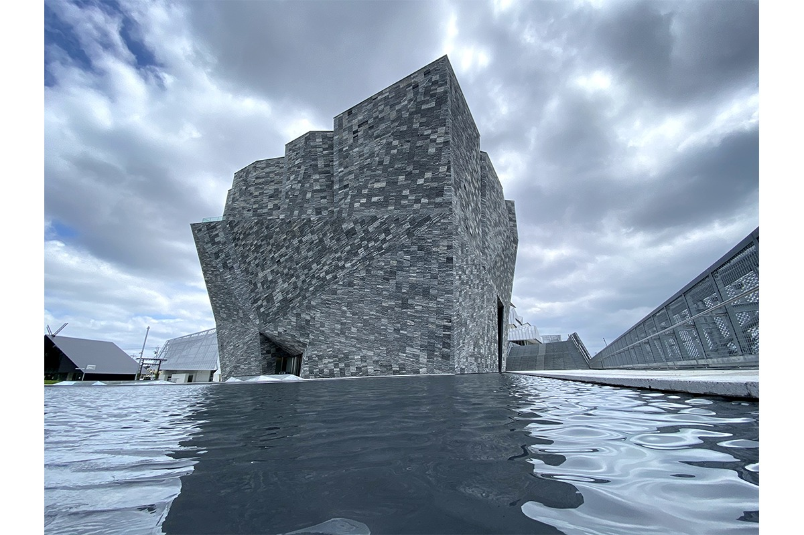
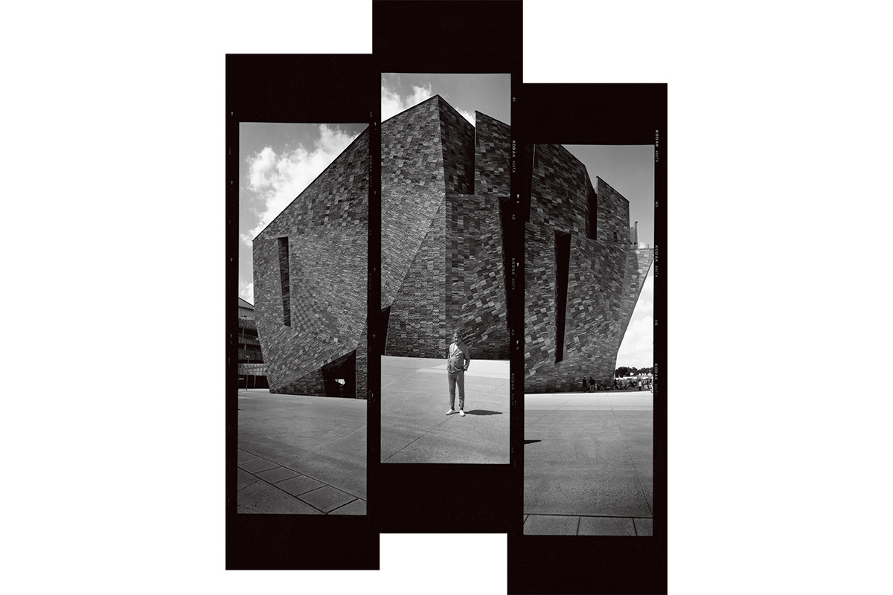
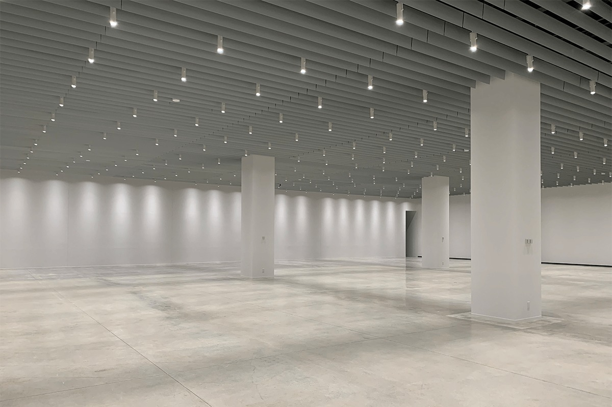
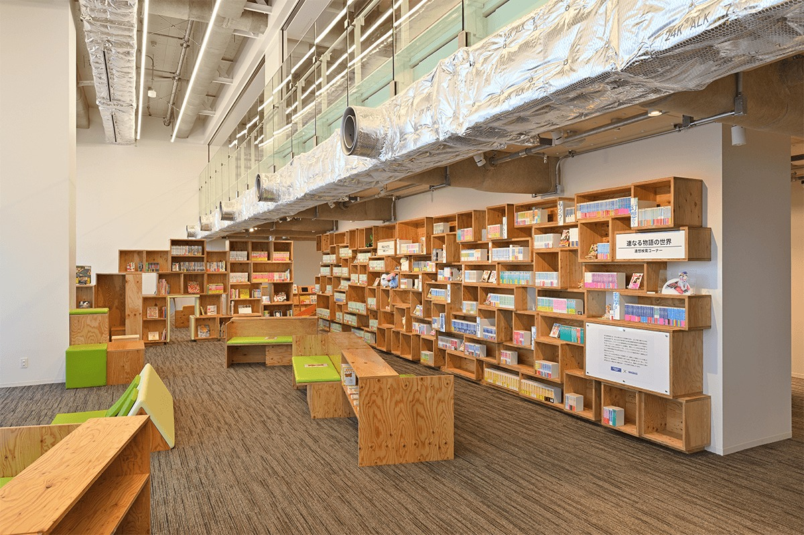
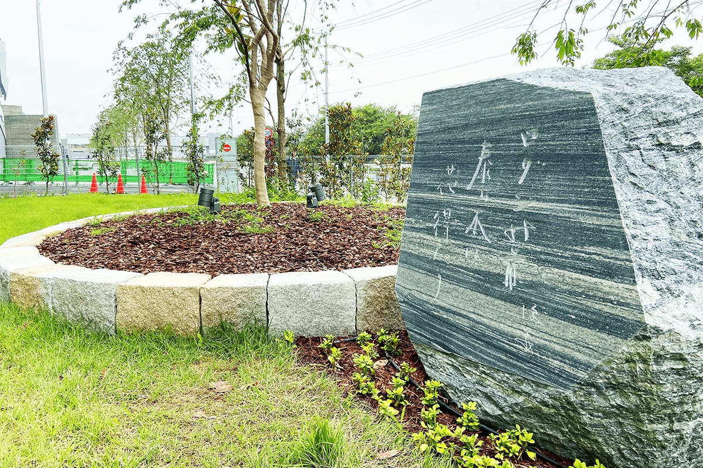
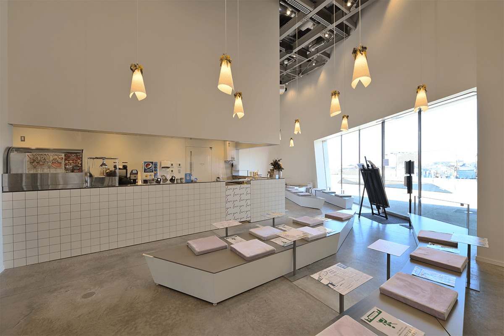
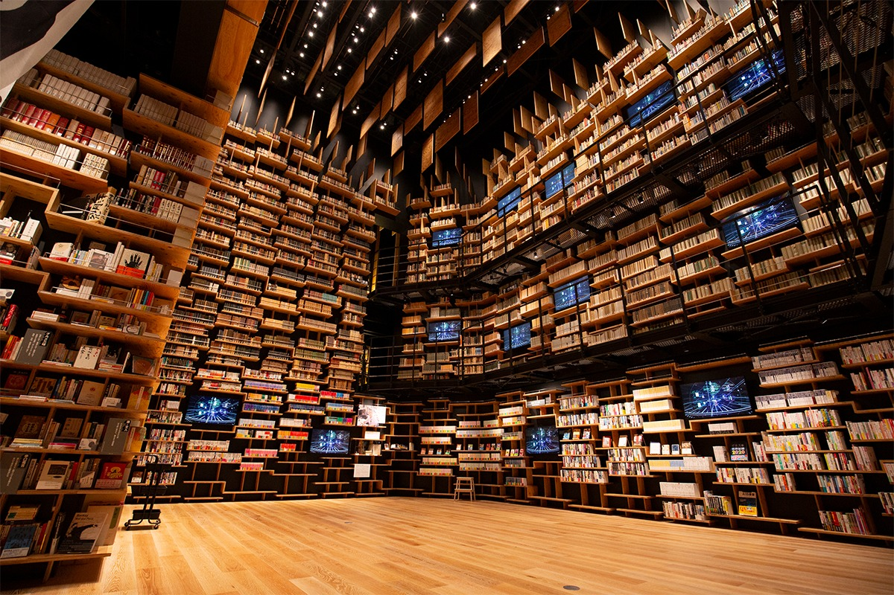
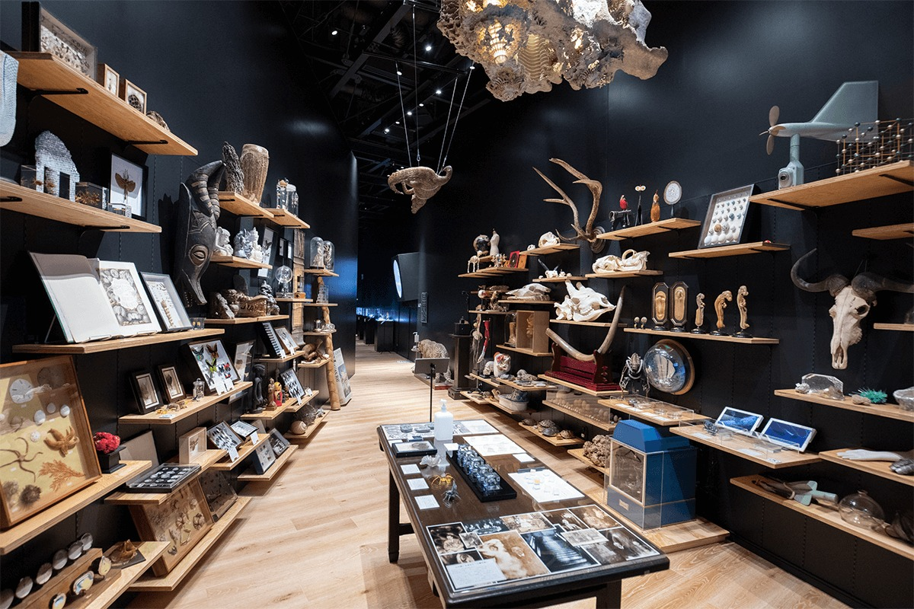
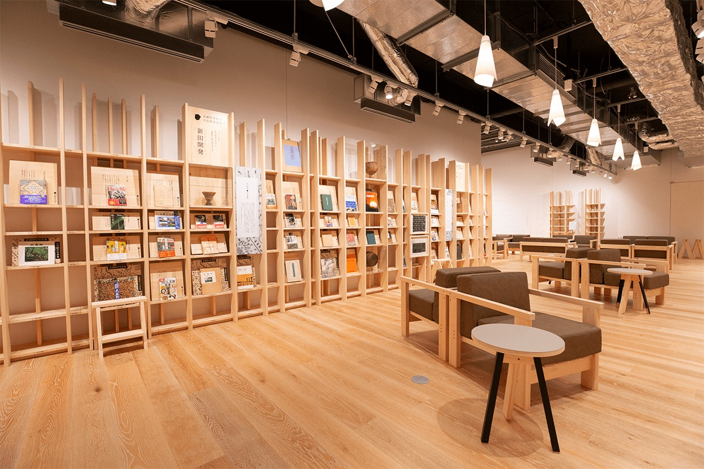
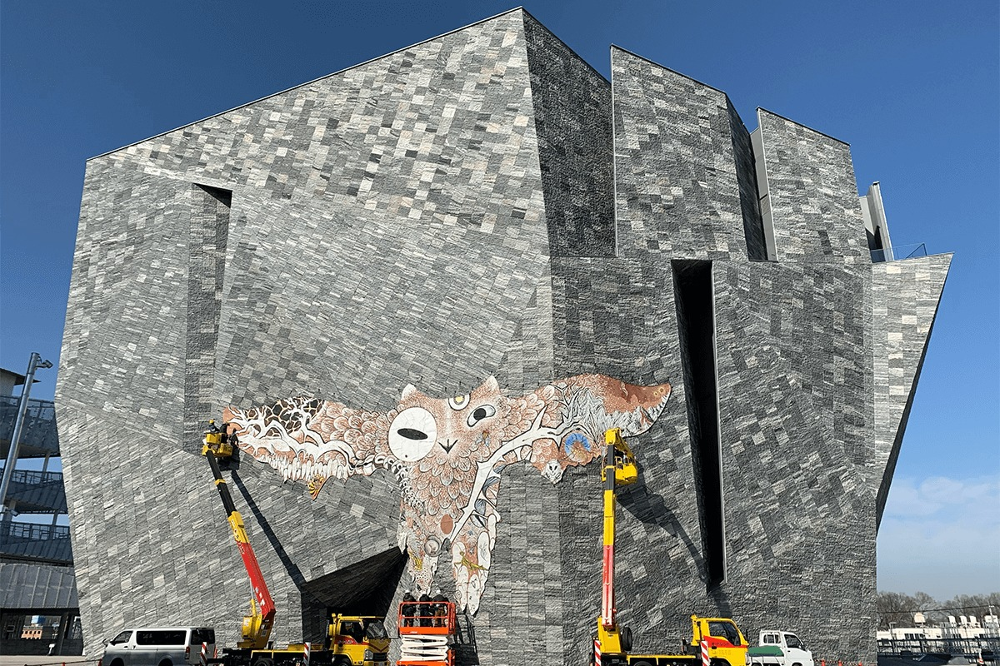

Префектура Сайтама · Токородзава · архитектура и музеи
Музей «Кадокава Мусасино»: каменная глыба Кэнго Кумы и книжный театр в Токородзаве

В Токородзаве, на западе префектуры Сайтама, из земли словно выросла огромная скала. Внутри неё библиотека, художественный музей и кабинет редкостей, а в центре зал, где книги поднимаются стеной на восемь метров.
Архитектура
Скала посреди Мусасино
Музей «Кадокава Мусасино» открылся 6 ноября 2020 года в Токородзаве, городе на западе префектуры Сайтама. Он стал главным зданием квартала Tokorozawa Sakura Town, который издательская и развлекательная компания KADOKAWA построила вместе с городом. От станции Хигаси-Токородзава линии JR Мусасино до него около 10 минут пешком. Название напоминает о Мусасино, равнине к западу от Токио, когда-то покрытой лесами.
Здание спроектировал архитектор Кэнго Кума. Это многогранник высотой около 40 метров: снаружи оно кажется то одноэтажным, то пяти-, то семиэтажным, хотя этажей в нём пять. Стены собраны из 66 треугольных плоскостей, и под каждым углом и при каждом освещении глыба выглядит по-новому.

Фасад покрывают около 20 000 гранитных плит, каждая весит около 60 килограммов и более чем вдвое толще обычной. Поверхность у них грубо сколотая, а швы между плитами нарочно не выровнены.
«Во все времена и во всех странах каменные плиты старались подгонять стык в стык. Я попросил сделать наоборот, и строители справились с этой безумной просьбой. Я им бесконечно благодарен»
Кэнго Кума
С камнем и деревом, материалами, которых человек касается с древности, Кума работает давно: в посёлке Насу в соседней префектуре Тотиги у него есть музей камня Stone Plaza, а в шотландском Данди филиал лондонского музея Виктории и Альберта. Музей в Токородзаве называют итогом его «каменной архитектуры»: в этой скале соединились лес, земля и культура.
Нижние этажи
Галерея, манга и сад
Музей задумывали как место, где сходятся библиотека, художественный музей и музей естественной истории. На первом этаже находится Большая галерея площадью около 1000 квадратных метров. Здесь проходят выставки обо всём, у чего есть своя история: от природы и науки до моды и общества.

Рядом библиотека манги и лайт-новел, лёгких иллюстрированных романов. В 2020 году здесь собрали все книги лейблов KADOKAWA, около 25 000 томов, а также отдел детских книг и полки с самыми обсуждаемыми новинками.

У здания разбит сад в память об основателе издательства Гэнъёси Кадокаве (1917–1975). В 1955 году друзья, поэты хайку, подарили ему к новоселью магнолию, и его дом в Токио стал местом, где собирались поэты. Сад вокруг этого дерева воссоздаёт тот дом: к магнолии добавили плакучую сакуру и «семь осенних трав».

На втором этаже касса, KadoCafe и магазин Rock Museum Shop. В кафе подают сладости из батата, которым славится Токородзава, и красивый латте-арт. В магазине продают сувениры музея, в том числе вещи в форме самого здания, и ремесленные изделия из Мусасино.

Третий этаж в 2020 году занимал EJ Anime Museum, где аниме показывали как часть японской культуры: вместе с литературными первоисточниками, студиями, актёрами озвучания, фильмами, играми и сувенирами.
Книги
Edit Town и Книжный театр
Четвёртый этаж называется Edit Town, «город редактуры». Его концепцию составил директор музея на момент открытия Сэйго Мацуока, исследователь японской культуры и основатель «редакторской инженерии», науки о том, как связывать знания из разных областей. Около 25 000 книг стоят здесь не по привычным разделам, а по «девяти контекстам» для понимания мира, и между полками ходишь, как по улицам. Над головой висят обложки книг, макет здания из мастерской Кумы и «книжная одежда» модельера, сшитая из книг.
Главный зал этажа носит название «Книжный театр». Его стены от пола до потолка, на высоту около 8 метров, занимают полки с 30 000 книг: издания KADOKAWA и личные библиотеки, среди них собрание самого Гэнъёси Кадокавы. Книги можно читать внутри музея. В 2020 году каждые полчаса в зале показывали проекционное шоу на полках. 31 декабря 2020 года отсюда выступал дуэт YOASOBI в новогоднем песенном конкурсе «Кохаку ута гассэн».

Полки зала тоже проектировал Кума. Он хотел, чтобы они повторяли устройство человеческого мозга.
«У информации в книгах разная толщина. Мне хотелось показать этот рельеф»
Кэнго Кума
На том же этаже «Сокровищница чудес Араматы» писателя и натуралиста Хироси Араматы. Она делится на две комнаты. В первой есть уголок, где экспонаты можно взять в руки, вторая показывает красоту и загадки живой природы на стыке науки и искусства.

Мусасино
Коридор на пятом этаже
Верхний этаж посвящён самой равнине Мусасино. Книги для «Коридора Мусасино» отобрал и снабдил комментариями этнограф: здесь география, история, литература, репортажи и фотоальбомы. Полки, похожие на смешанный лес, спроектировал Кума, а собрали их на столярном занятии 19 семей из Токородзавы вместе с мебельной мастерской из Исиномаки. Эту мастерскую основали после землетрясения 2011 года, чтобы помочь пострадавшему краю. Её диваны в коридоре сделаны из кипариса хиноки, выросшего в Сайтаме.

Искусство
Птица на каменной стене
Сам фасад музея тоже становился площадкой для искусства. В январе 2021 года художница Томоко Коноикэ примерно на год поместила на стену «Кожаного коршуна Мусасино»: огромную птицу, сшитую из коровьих шкур и покрытую краской на водной основе, которая старела под дождём и солнцем, как человеческая кожа.

Музей «Кадокава Мусасино»
- Адрес
- префектура Сайтама, Токородзава, Хигаси-Токородзава-Вада, 3-31-3, Tokorozawa Sakura Town
- Телефон
- +81 570-017-396 (10:00–17:00)
- Часы работы
- воскресенье–четверг 10:00–18:00 (вход до 17:30), пятница и суббота 10:00–21:00 (вход до 20:30)
- Выходные
- первый, третий и пятый вторник месяца (если праздник, на следующий день)
- Цены / Вход
- зависят от выбранных зон, билеты продаются на сайте
- Как добраться
- около 10 минут пешком от станции Хигаси-Токородзава линии JR Мусасино
- Сайт
- kadcul.com
Фото: Бенджамин Ли.